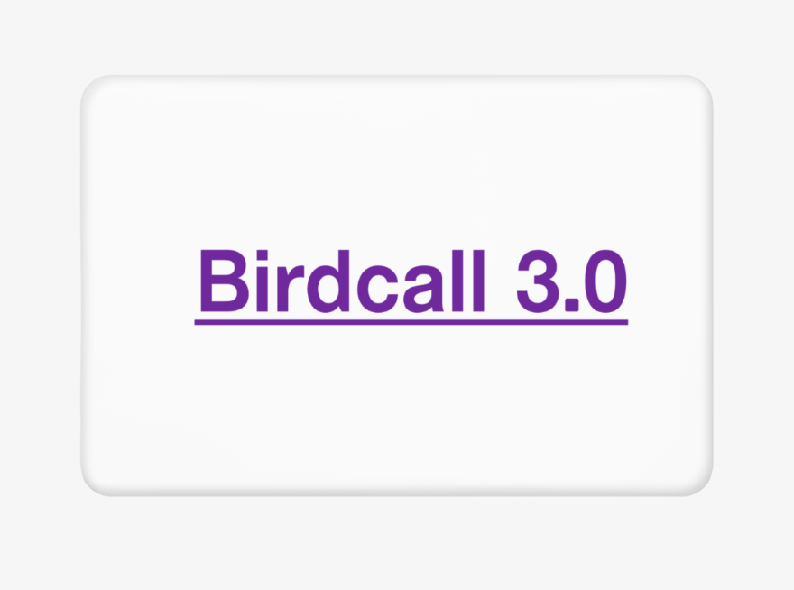

휠체어에 완전히 의지하게 된 건 언제부터였을까. 내 근육병은 진행 속도가 느린 편이어서, 언제부터 걷지 못했고 언제부터 서 있지 못했는지가 흐릿하다. 어쨌거나 지금은 수동이든 전동이든 휠체어가 없으면 일상생활이 불가능하다.
앉거나 누운 자리에서 꼼짝도 할 수 없다. 사실 꼼짝은 할 수 있는데 그것이 정말 꼼짝에 불과해서 꼼짝도 할 수 없는 것과 별반 다르지 않다. 수동 휠체어가 있어 책상에 앉아서 글을 쓸 수 있고, 전동 휠체어가 있어 밖에 나가서 사진을 찍을 수 있다.